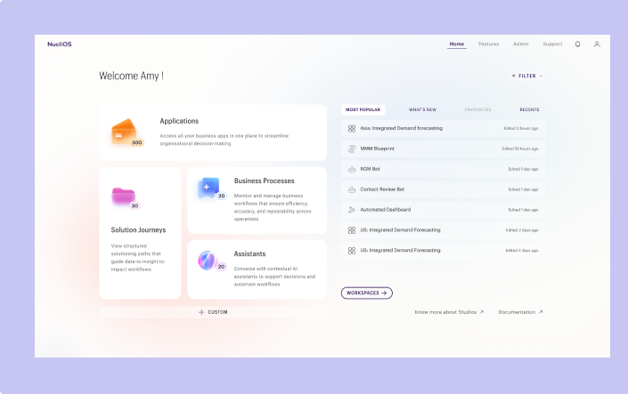

✈ FLIGHT MODE
living we don't
... I'm so fed up with
silence culture.
thing. We've got
people feels the
themselves that
anybody. I
stand it, and it's
we gravitate towards
to. I don't
is right. Sure, is
one can be strong-
is also commonly
of attachment,
insufficiency.
weak or of
anyone and being
think it's quite
in yourself up to
... for help. To depend
others. Interestingly,
talked to Emi the
other day and she
wants to move away
and study in another
city by herself. When
I asked her "what
about Joshua?" she
said she wants to
prove to herself that
she can live
alone and that
she doesn't
need him. She's

5 X 90 cm · Fern

5 X 11 cm · Specimen
3 X 45 cm · Texture
5 X 11 cm · Moss
T
u
e
s
d
a
y
“Flight mode is where I step away from screens
and let observation take over. I collect little things—
plants, colors, fragments, thoughts—and turn them
into something tangible. This is the quieter
side of how I make.”
told me before a few times that one loves him and likes
having him as her boyfriend but she doesn't
need him. And maybe she's right but I
don't think I see it that way.
I was perfectly fine being single
but now that I'm in a relationship,
I'm not scared to admit that I
need him. Sure, it's not very modern /
feminist of me but it's true. And
my dreams do hinge upon his presence in
my life. It's also about how you need someone. I don't
need him to give me self-esteem or anything... I'm my own person.
But yeah. I need him. And so what? He needs me too. (Sometimes I think
that at the moment he might even need me more.) Should either of us be ashamed
of that? Absolutely not.
We are made to need and be needed in the same
way that we were made to love and be loved. It's
natural and we need to stop romanticising hyper-independence.
People are supposed to ask for help and depend on each
other and make each other happy. What good is there in running from that? Why
should
we pretend that we're fine alone? Why should we break ourselves trying to handle
every-
thing ourselves? We can be much stronger together than alone. We make each other
into
better people. We make each other's lives so much brighter.